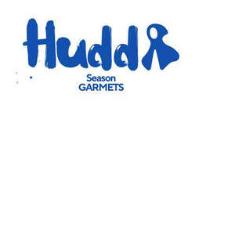

Trade Mark Journal No.2025/034 22 August 2025
UK00004231307 9 July 2025 (9,14,16,18,20,21,24,25,26,28,35,40,41,42,45)

- Class 9
- Fashion sunglasses; Fashion spectacles; Fashion eyeglasses.
- Class 14
- Fashion jewellery; Shoe jewellery; Shoe jewelry; Dress ornaments in the nature of jewellery; Bridal headpieces in the nature of tiaras; Costume jewellery; Costume jewelry.
- Class 16
- Clothing patterns.
- Class 18
- Fashion handbags; Bags for sports clothing; Holdalls for sports clothing.
- Class 20
- Covers for clothing [wardrobe].
- Class 21
- Articles for the care of clothing and footwear.
- Class 24
- Textiles for making articles of clothing; Textile piece goods for making-up into clothing; Textile piece goods for clothing; Textile fabrics for making into clothing; Fabric for footwear; Footwear (Fabric for -); Textile piece goods for making into clothing; Textile fabrics for lingerie; Textile fabrics for the manufacture of clothing; Labels of textile for identifying clothing; Labels (Textile -) for marking clothing; Apparel fabrics; Textile used as lining for clothing; Labels (Textile -) for identifying clothing; Textile fabrics for use in the manufacture of sportswear.
- Class 25
- Fashion hats; Menswear; Ready-to-wear clothing; Knitwear [clothing]; Face masks [fashion wear] ; Casual clothing; Foulards [clothing articles]; Clothing; Casual footwear; Dance clothing; Sportswear; Clothing for sports; Sports clothing; Playsuits [clothing]; Bandeaux [clothing]; Parts of clothing, footwear and headgear; Footwear; Leisure clothing; Leather clothing; Clothing of leather; Leather (Clothing of -); Denims [clothing]; Articles of sports clothing; Japanese traditional clothing; Clothing for leisure wear; Knitwear; Smart clothing; Corsets [clothing, foundation garments]; Clothing for martial arts; Articles of clothing; Headbands [clothing]; Headbands for clothing; Footwear for women; Japanese style sandals of leather; Cashmere clothing; Sports garments; Athletic clothing; Footwear for sports; Sports footwear; Men's clothing; Kendo outfits; Jackets being sports clothing; Furs [clothing]; Clothing of imitations of leather; Leather (Clothing of imitations of -); Clothing for wear in wrestling games; Clothes for sports; Footwear for sport; Footwear for use in sport; Leisure footwear; Skating outfits; Party hats [clothing]; Japanese style clogs and sandals; Clothing for gymnastics; Clothing for cycling; Footwear for snowboarding; Clothes for sport; Articles of clothing made of leather; Clothing for skiing; Sneakers [footwear].
- Class 26
- Accessories for apparel, sewing articles and decorative textile articles; Brooches [clothing accessories]; Brooches for clothing; Trimmings for clothing; Frills for clothing; Buckles [clothing accessories]; Bows for clothing.
- Class 28
- European style dolls; Doll clothing; Dolls' clothing accessories; Clothing for dolls; Articles of clothing for dolls.
- Class 35
- Retail services in relation to fashion accessories; Fashion show exhibitions for commercial purposes; Promoting the sale of fashion goods through promotional articles in magazines; Fashion shows for promotional purposes (Organization of -); Organization of fashion shows for promotional purposes; Organisation of fashion shows for commercial purposes; Organization of fashion parades for sales promotion purposes; Retail services connected with the sale of clothing and clothing accessories.
- Class 40
- Recycling of clothing; Tailoring or dressmaking.
- Class 41
- Entertainment in the nature of fashion shows; Organizing and presenting displays of entertainment relating to style and fashion; Organization of fashion parades for entertainment purposes; Organisation of fashion shows for entertainment purposes; Fashion shows for entertainment purposes (Organization of -); Organization of fashion shows for entertainment purposes; Education services relating to fashion; Entertainment in the nature of beauty pageants.
- Class 42
- Fashion design; Design of fashion accessories; Fashion design consulting services; Design of clothing; Design of clothing, footwear and headgear; Design of clothing accessories; Designing of clothing; Providing information about fashion design services; Jewelry design; Design of jewellery; Design of protective clothing; Dress design; Design for others in the field of clothing; Clothing design services; Design services for clothing; Footwear design services; Styling [industrial design]; Styling; Interior design services for boutiques.
- Class 45
- Fashion information; Providing fashion information; Rental of sunglasses for fashion purposes, other than for vision correction; Personal fashion consulting services; Rental of spectacles for fashion purposes, other than for vision correction; Rental of eyeglasses for fashion purposes, other than for vision correction; Providing information about fashion; Personal wardrobe styling consultancy; Personal wardrobe styling services.
Tafari Osiris Asha Bennett